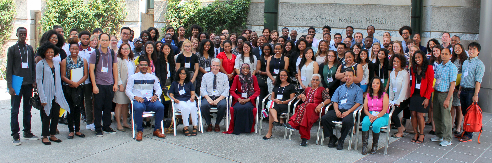
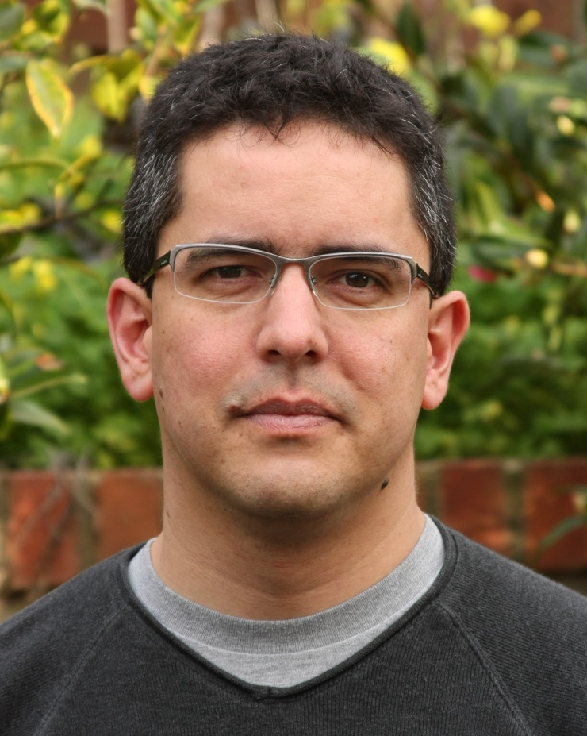

Why StatFest?
StatFest is a one day conference aimed at encouraging undergraduate students from historically underrepresented groups (African American, Hispanic, Native Americans) to consider careers and graduate studies in the statistical sciences. StatFest 2018 will be taking place on Saturday, September 22nd. Be sure to sign up today (see below)!
StatFest will be held at Amherst College ( https://nhorton.people.amherst.edu/statfest/index.html) with satellite programs at Purdue University and Pomona College ( http://st47s.com/statfest.html).

StatFest is an ongoing initiative of the American Statistical Association (ASA) through its Committee on Minorities in Statistics.
The conference includes:
- presentations from established professionals, academic leaders, and current graduate students that will help attendees understand the opportunities and routes for success in the field,
- opportunities for networking,
- opportunity for attendees to submit and present posters describing their research, and
- panel forums that will provide information and tips for a rewarding graduate student experience, achieving success as an academic statistician, opportunities in the private and government arenas, among other topics.
We are excited to host a satellite StatFest 2018 at Pomona College (Claremont, CA), one of the premier liberal arts colleges in the nation, enrolling 1,800 talented, energetic and diverse young men and women. Pomona is one of the most diverse liberal arts colleges in the country. Our dedication to the centrality of inclusiveness helps us ensure that the college is a place to which all students feel they belong.
For more information please contact Jo Hardin (jo.hardin@pomona.edu) or Talithia Williams (twilliams@hmc.edu). For information on the Amherst event, contact: Nicholas Horton (nhorton@amherst.edu), Renee’ Moore (renee.moore@emory.edu) or Jesse Chittams (chittams@nursing.upenn.edu).
Registration
The conference is free but preregistration is required (deadline to register is Wednesday, September 19th). The registration link can be found HERE.
Keynote Speakers
 Fernando Perez created iPython and co-created Project Jupyter . He is a professor of statistics at the University of California/Berkeley and Senior Fellow of the Berkeley Institute for Data Science. Fernando and the Project Jupyter Team were honored with this year’s ACM Software System Award (https://twitter.com/UCBIDS/status/991731806100738048).
Talithia Williams received her PhD from Rice University in Statistics. She is currently a professor of mathematics at Harvey Mudd College and co-host of the PBS series NOVA Wonders.
Links
Conduct policy
As an activity sponsored by the American Statistical Association (ASA), StatFest is committed to providing an atmosphere that encourages the free expression and exchange of ideas. Consistent with this commitment, it is the policy of the ASA that all participants in ASA activities, including StatFest, will find a welcoming and respectful environment free from unlawful discrimination, harassment, and retaliation. All aspects of StatFest are subject to the ASA’s conduct policy.
Last updated August 8, 2018
webpage originally authored by Nicholas Horton, Amherst College.